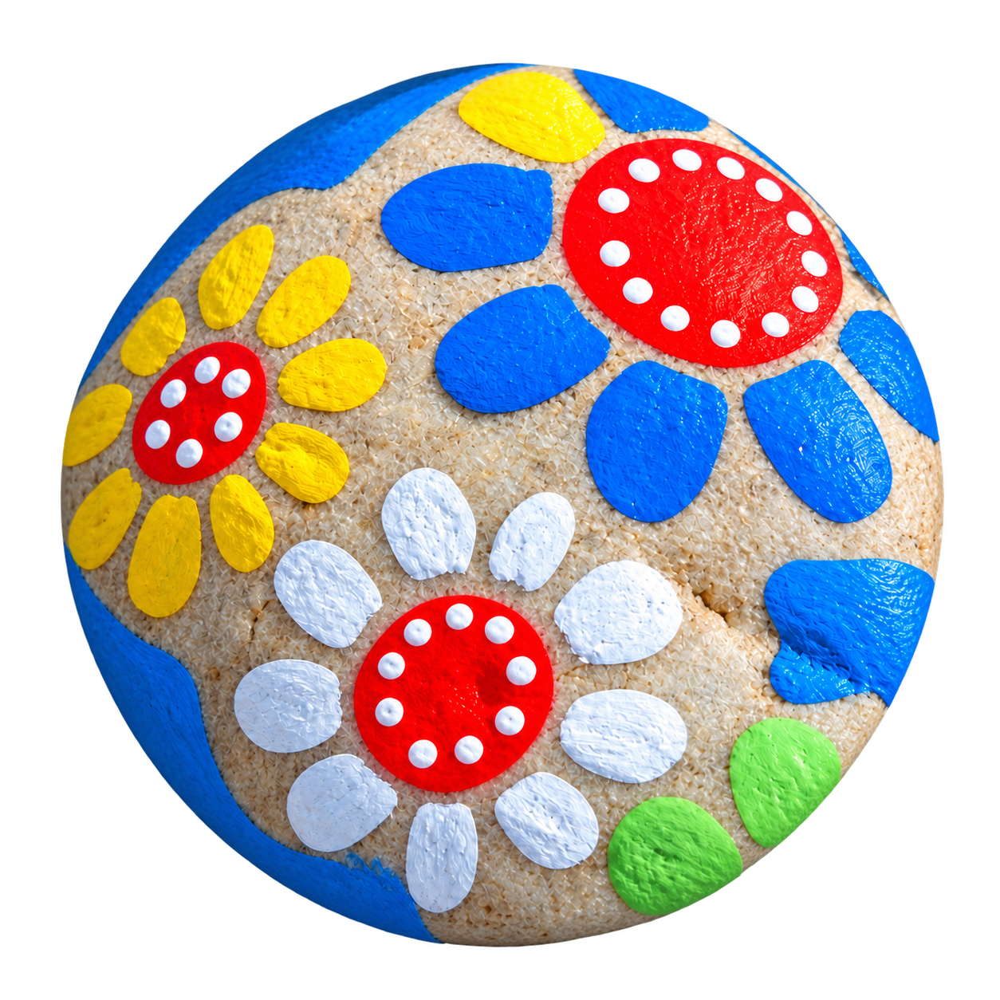
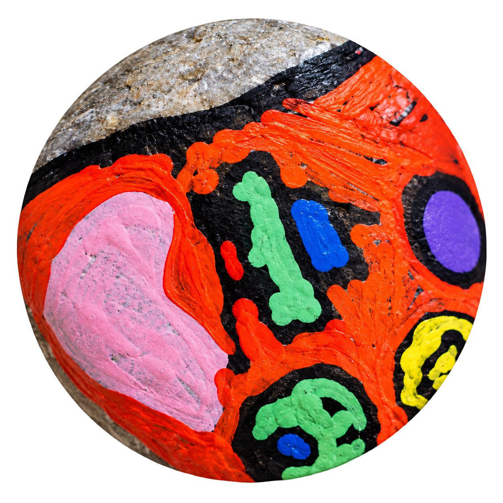

PRE MALÝCH TVORCOV A VEĽKÉ DOBRODRUŽSTVÁ
Malý kamienok.
Veľký príbeh.
Living Stones sú maľované kamienky, ktoré cestujú medzi ľuďmi. Každé nájdenie pridá do ich príbehu nové miesto a spomienku.


Ako na to? Päť jednoduchých krokov.
Namaľujte kamienok
Kamienok namaľujte a ozdobte, najlepšie akrylovými farbami na kamene. QR štítok odolá vode aj UV žiareniu. Lakovanie je voliteľné, no predĺži životnosť kresby aj štítku.
Nalepte dodaný QR štítok
Každý kamienok potrebuje jeden vlastný štítok s QR a číselným kódom. Nalepte ho na rovný povrch, aby QR zostal čistý a dobre čitateľný.
Naskenujte QR a oživte kamienok
Telefónom naskenujte QR. Zadajte meno kamienka, autora a kód zo štítka, pridajte fotku a polohu. Potom ťuknite na Oživiť kamienok.
Meno + kód→Fotka→Poloha + oživenieNechajte ho nájsť
Položte ho na bezpečné miesto, kde si ho niekto všimne — napríklad v parku alebo na prechádzke. Jeho príbeh môže pokračovať!
Sledujte, kam sa dostane
Kto kamienok nájde, naskenuje QR a zapíše nájdenie. Potom ho môže vziať na výlet a nechať pre ďalšieho nálezcu. Jeho cestu sledujete cez QR alebo na webe.